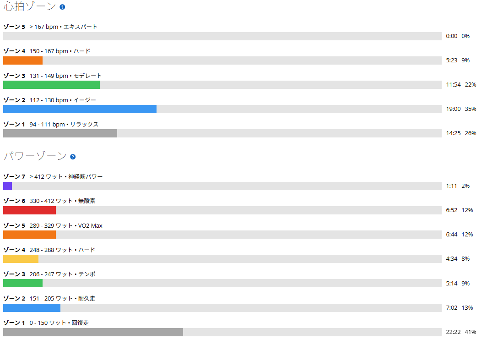

脚は重い。でも山に入ったら踏めた。唐沢2本目は316W
今日は走る前から脚が重かった。前日までの練習もあるし、ガッツリ走ることを考えても正直あまりテンションは上がらない。そこで今日はANCHOR RNC7で唐沢へ。走り出してダメそうなら無理をせず、山に入ってから身体の反応を見て決めることにした。
ところが、最近よくあるパターンが今日も出た。走る前は「今日は踏めないかな」と思っていたのに、いざ山に入ると普通に行ける。

21.57km・NP248W・TSS72.4
- 全体21.57km / 54分02秒 / 獲得320m / 運動量572kJ
- 負荷平均176W / NP248W / IF0.900 / TSS72.4
- 心拍・回転平均122bpm / 最大163bpm / 平均84rpm
- 高強度側パワーZ5以上で14分47秒 / 心拍Z4が5分23秒
短時間なのでTSSは72.4。ただしIFは0.900で、54分のうち14分47秒をゾーン5以上に置いている。時間は短いが、中身はしっかりONだった。
1本目から277W。様子見のつもりがほぼFTP
- 唐沢1本目9分23秒 / 277W / 3.69W/kg / 心拍139〜151bpm / 84rpm
FTP設定が275Wなので、様子見のつもりがほぼFTPになっていた。走り出す前に感じていた脚の重さは、登りに入るとあまり気にならなかった。
最近はこのパターンが何度か続いている。スタート時点では脚が重い。でも走って身体が温まり、山に入ると踏める。単純に「脚が重い＝今日は能力が低い」とは言えなくなってきた感じがする。
2本目は316W
- 唐沢2本目6分21秒 / 316W / 4.21W/kg / 心拍144〜156bpm / 81rpm
1本目より明確に上がった。今日はSSTくらいで走る案もあったのだが、結局そんな感じではなくなった。
ただ、最初から追い込むつもりで家を出たわけではない。むしろ走る前はガッツリやる気にならなかったのに、山に入ったら身体が動いた。最近少しずつ感じている「疲れていても走り始めれば動ける」という耐久性が、また出たように思う。

350Wを狙って367W。ここでも上振れした
- 最後の確認区間2分16秒 / 367W / 4.89W/kg / 心拍141〜163bpm / 84rpm
唐沢を2本走ったあと、最後に最近練習している350W付近の確認を入れた。結果は2分16秒で平均367W。
できるだけ350W付近に居座れるかの確認である。結果として最近の練習の成果として、2分ちょっとで続けられた。
なお、この区間は道路の長さの関係でこれ以上時間を伸ばせない。なので今後は「350Wを何分まで伸ばす」ではなく、同じ区間でどれくらい安定して出せるかを見る場所になりそうだ。今日のように全体の負荷がそこまで大きくない日なら、このくらいの時間は高出力を維持できることが確認できた。
「脚が重い」をその日の判定に使わない
外を走った直近3回を並べると、こうなる。
- 8月31日スタート時に「今日は踏めないかな」→ 太平 7分04秒・317W
- 9月3日前日の60/30で潰れた翌日 → 太平 7分00秒・324W
- 今日脚が重くテンションも上がらない → 唐沢 6分21秒・316W、最後に367W
3回とも、走る前の予想より踏めている。もちろん本当に疲れている日もあるだろう。でも今は、走り始めてから身体が起きてくる日もかなりある。
最近、自分の「脚が重い」という感覚を、そのままその日の能力判定に使わない方がいい気がしている。この違いをもう少し観察してみたい。
今日やってみて思ったこと
家を出る前は「今日はガッツリ走る気分じゃないな」と思っていた。それでも走り始めて山に入ると、277W、316Wと普通に踏めた。さらに最後には350W付近の確認までできた。
今日いちばん印象に残ったのは数字よりも、走り出す前と山に入ってからの感覚の違いだった。この差が毎回出るなら、家を出る前の自分の判断はあまり当てにしない方がいい。とりあえず走り出す。それから決める。それくらいでちょうどいいのかもしれない。
明日は天気次第。走れれば友人と唐沢をリピートする予定だが、走力差もあるので会話できるペースで登るつもり。雨ならアクティブレストにする。
次に見るポイント
- 太平で320W台高強度の翌日にもう一度出せるか。2回出たら「耐久値」と書いていい
- 上振れ350Wを狙って350W台で入れるようになるか。実走でもローラーのように抑えられるか
- 確認区間同じ2分程度の区間で、どれくらい安定して出せるか
- スタート時の感覚「脚が重い」と感じた日が、実際にダメだったことはあるか